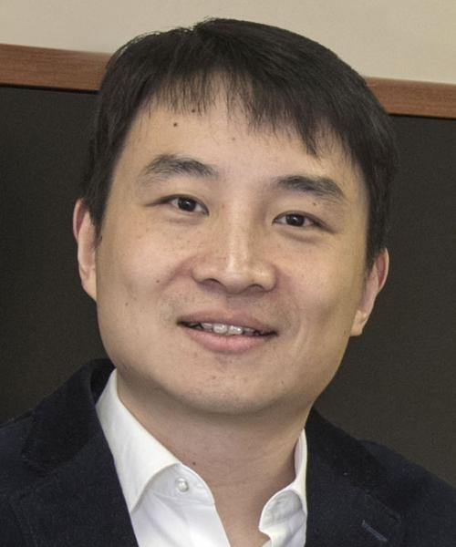

We are hiring multiple machine learning/computer vision postdoctoral researchers!
Yuewei Lin
Computational Scientist
Brookhaven National Laboratory, Computational Science Initiative
Upton, NY 11973
Email: ywlin AT bnl DOT gov
Phone: (631)-344-8704
Research Associate Professor
Stony Brook University
Stony Brook, NY 11973
Email: yuewei DOT lin AT stonybrook DOT edu
[Curriculum Vitae] [BNL homepage] [Google Scholar] [LinkedIn]
Computational Scientist
Brookhaven National Laboratory, Computational Science Initiative
Upton, NY 11973
Email: ywlin AT bnl DOT gov
Phone: (631)-344-8704
Research Associate Professor
Stony Brook University
Stony Brook, NY 11973
Email: yuewei DOT lin AT stonybrook DOT edu
[Curriculum Vitae] [BNL homepage] [Google Scholar] [LinkedIn]
We are hiring multiple machine learning/computer vision postdoctoral researchers!
Short Bio
I am a Computational Scientist at the Brookhaven National Laboratory, Upton, NY. I obtained my PhD degree from University of South Carolina, Columbia, SC. Prior to that, I obtained my M.S. and B.S. degree from Chongqing University, China and Sichuan University, China, respectively.
Research Interests
- Object/action classification and detection
- Adversarial attack/defence
- Domain adaptation/generalization
- Computer vision techniques applied in large scale scientific data analysis
News

- 2022-05: One project in which I will serve as a co-PI has been awarded by DOE NNSA, $1,080,000, FY22-FY24.
- 2022-04: We organize "Learning with Limited Data for Face Analysis" workshop in conjunction with ACCV this December in Macau SAR.
- 2022-02: I accepted invitation to be Area Chair for ACM Multimedia (MM), 2022.
- 2021-11: One paper has been accepted by Acta Crystallographica Section D: Structural Biology.
- 2021-09: One project in which I will serve as a co-PI has been funded by BNL Laboratory Directed Research and Development (LDRD), $1,250,000, FY22-FY24.
- 2021-08: One project in which I will serve as a co-PI has been announced to be awarded by DOE BES, $800,000/year, FY22-FY24.
- 2021-07: Two papers have been accepted by ICCV 2021.
- 2021-05: One paper has been accepted by IEEE Transactions on Cybernetics.
Awards
- Department of Energy (DOE) NNSA Joule Award, 2020.
- 2017’s Top-10 Discoveries and Scientific Achievements at Brookhaven National Laboratory, 2017. (link, news, picture)
- Outstanding Graduate Researcher of the CSE Department, University of South Carolina, 2016.(picture)
- Chinese Government Award for Outstanding Self-financed Student Abroad, 2015. (picture)
- Best 10% Paper Award, International Conference on Image Processing, 2015.
{kind=link}
{kind=link}
{kind=link}
Quick links
CVF | IEEE | CV Conferences
Liverpool FC